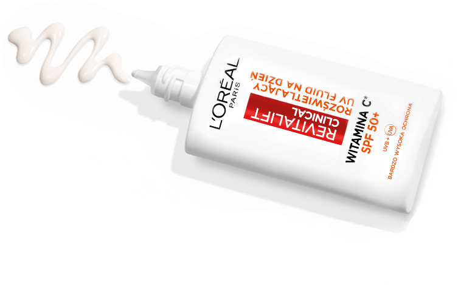

Różnica tkwi
w nauce
Twoja
poranna rutyna
Codziennie
Cały rok
krok 1
rozświetla

serum
12% czystej
witaminy c
krok 2
chroni
ultralekki
UV FLUID
spf 50+
4x
bardziej
rozświetlona
skóra(2)

przed(3)

po(3)
uv fluid spf50+
z witaminą c(4)
CZY WIESZ, ŻE 80% OZNAK STARZENIA SIĘ SKÓRY JEST SPOWODOWANYCH PRZEZ PROMIENIOWANIE UV?
Zapobiegaj im każdego dnia z innowacyjnym UV fluidem z SPF50+.
1
BARDZO WYSOKA OCHRONA PRZED UVA I UVB
2
DZIAŁANIE ZAPOBIEGAJĄCE POWSTAWANIU PRZEBARWIEŃ
3
WSPARCIE REDUKCJI DROBNYCH ZMARSZCZEK
skuteczna codzienna ochrona bez kompromisów

ultralekka, nieklejąca się konsystencja
niewidoczne wykończenie
idealny pod makijaż
odporny na wodę, pot, piasek i tarcie
składniki aktywne

filtry UV

Bardzo wysoka ochrona przed UVB SPF50+ i UVA.

witamina C(4)
Antyoksydant, który pomaga rozświetlić skórę.

Bezpieczeństwo i wysoka
tolerancja formuły
niskie ryzyko migracji w okolice oczu
niekomedogenna
testowana na wszystkich typach skóry
Zastosowana technologia
Technologia filtrów UV opatentowana przez laboratoria L'Oréal, dzięki której na powierzchni skóry tworzy się ultracienka, jednorodna warstwa ochronna, zapewniająca wysoką ochronę przed promieniowaniem UV.

widoczne rezultaty
93%
kobiet przyznaje, że
przebarwienia
są mniej widoczne(5)
92%
kobiet potwierdza, że
drobne zmarszczki
są zredukowane(5)

Porady dermatologa

Jak stosować?
Przed aplikacją wstrząsnąć.

Codziennie rano nakładaj równomiernie na skórę jako krem nawilżający lub po pielęgnacji skóry oraz przed makijażem. Można aplikować na powieki i okolice oczu.
Stosuj każdego dnia przez cały rok, niezależnie od pogody.
rozświetlający duet

Revitalift Clinical Serum do twarzy
z 12% czystej witaminy C, witaminą E
i kwasem salicylowym
Rozświetla skórę, wyrównuje jej koloryt, zmniejsza widoczność porów i wspomaga redukcję drobnych linii.
Kup teraz
Revitalift Clinical Rozświetlający
UV fluid z SPF50+ i witaminą C(4)
Chroni skórę przed promieniowaniem UVA i UVB, wspiera redukcję przebarwień, pomaga widocznie zmniejszyć drobne linie i zmarszczki.